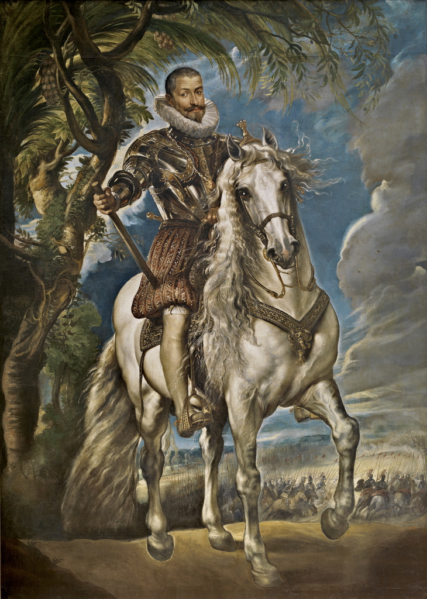
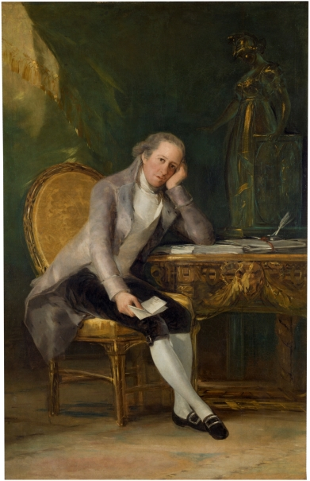

A Museo Nacional del Prado az Államtanáccsal együttműködésben egy tematikus útvonalat állított össze, amely tizenhárom kiválasztott műalkotáson keresztül mutatja be Spanyolország politikai, intézményi és kulturális történetének öt évszázadát.
Az útvonal az Államtanács alapítójától, V. Károlytól egészen a felvilágosodás korának és a 19. századnak jelentős alakjaiig vezet. Új perspektívát kínál a múzeum állandó gyűjteményéhez, és bemutatja, hogy a portréfestészet nem csupán nagyra értékelt művészeti műfaj volt, hanem a hatalom, a befolyás és az emlékezet kifejezésének is fontos eszköze.
A múzeum gyűjteményének ez az új megközelítése az Államtanács fennállásának 500. évfordulóját ünnepli. A jubileum alkalmából az intézmény egykori történelmi tagjairól készült legkiemelkedőbb portrék közül válogattak.
6/15/2026 - 9/27/2026

